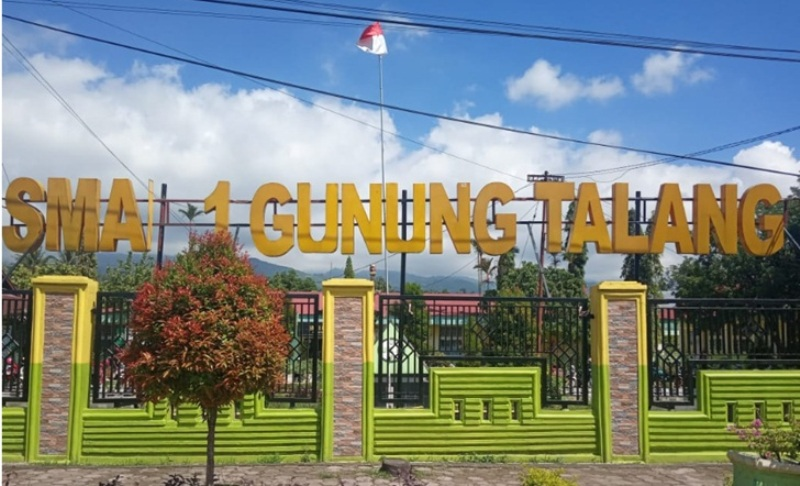

SMAN 1 Gunung Talang
Sekolah menengah atas negeri di Kabupaten Solok yang membina siswa berprestasi, berkarakter, dan siap melanjutkan pendidikan.

Sambutan Kepala Sekolah
Selamat datang di situs SMAN 1 Gunung Talang. Kami membina siswa agar tumbuh sebagai pribadi yang berprestasi, disiplin, dan peduli pada lingkungan sekitarnya.
Sekolah ini menempatkan pembinaan karakter sejajar dengan capaian akademik. Setiap siswa kami dorong untuk menemukan minatnya sendiri, lalu kami dampingi sampai tuntas.
Martin, S.Pd, M.Pd
Kepala SMAN 1 Gunung Talang
Visi & Misi
Visi
Menjadi sekolah unggul yang menghasilkan lulusan berprestasi, berkarakter, dan berdaya saing nasional.
Misi
- Menyelenggarakan pembelajaran yang aktif, kreatif, dan menyenangkan.
- Membina karakter dan kedisiplinan siswa.
- Mengembangkan potensi akademik dan non-akademik siswa.
- Meningkatkan kompetensi guru dan tenaga kependidikan.
- Membangun lingkungan sekolah yang bersih, aman, dan nyaman.